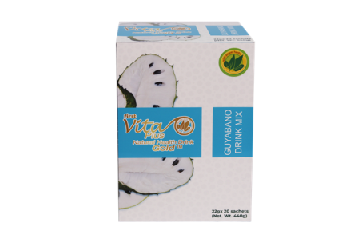

First Vita Plus Guyabano Gold (Soursop Fruit)

Your favorite Guyabano drink, enhanced with Vitamin C, with more selected premium leaves
of Moringa, Corchorus, Capsicum, Amaranthus and Ipomoea Batatas.
Ingredients:
Guyabano / Soursop (Annona muricata) Powder, Citric Acid as Acidulant, Carboxymethylcellulose
as Stabilizer, Ascorbic Acid (Vitamin C), Stevia (Stevia rebaudiana) as Sweetener, Horseradish
leaves / Dahon ng Malunggay (Moringa oleifera) Powder, Chili Pepper leaves / Dahon ng Sili
(Capsicum frutescens) Powder, Jute leaves / Dahon ng Saluyot (Corchorus olitorius) Powder, Pigweeds / Uray (Amaranthus spinosus) Powder, Sweet Potato Tops / Talbos ng Kamote (Ipomoea batatas) Powder
Directions:
Empty contents into 250ml glass of water. Stir until contents are completely dissolved. Relax and enjoy the refreshing taste of First Vita Plus.
Precaution:
Not recommended for children, pregnant, and lactating women.
22g x 20 sachets (Net Wt. 440g)